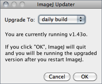
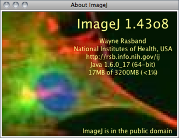

33
Many of the commands in this menu use ImageJ’s BrowserLauncher to open a Web page using the user’s default browser. On Linux, BrowserLauncher looks for ‘netscape’, ‘firefox’, ‘konqueror’, ‘mozilla’, ‘opera’, ‘epiphany’ or ‘lynx’ and uses the first one it finds.
33.1
Opens the ImageJ home page.
33.2
Opens the News section of the ImageJ website.
33.3
Opens the Documentation section of the ImageJ website.
33.4
Opens the Installation section of the ImageJ website specifically dedicated to the OS in which ImageJ is running, i.e either Linux, Mac OS 9, Mac OS X or Windows. Worth reading are the sections Known Problems and Troubleshooting.
33.5
Opens the ImageJ Interest Group page on the NIH LISTSERV facility. Here you can search the mailing list archives, post a message to the list, join or leave the list, or update options.
33.6
Opens the Developer Resources section of the ImageJ website.
33.7
Opens the Plugins page on the ImageJ website, which lists more than 500 ImageJ plugins.
33.8
Opens the macros directory on the ImageJ website, which contains more than 400 ImageJ macros.
33.9
Opens the Macro Functions reference page, an indispensable guide to the built in functions that can be called from the ImageJ macro language.
33.10

Upgrades ImageJ to the latest ij.jar at http://imagej.nih.gov/ij/upgrade/, or downgrades to one of the earlier versions at http://imagej.nih.gov/ij/download/jars/. Select daily build from the drop-down menu and ImageJ will be upgraded to the latest daily build at http://imagej.nih.gov/ij/ij.jar.
33.11
Use this command to update ImageJ’s menus after adding (or removing) plugins or macros to the plugins folder. Prior to ImageJ 1.44b this command was named ‘Update Menus’.
33.12
This submenu displays information about some of the plugins in the ImageJ plugins folder. To be included in this submenu, a plugin must be packaged as a JAR file. There is an example at rsb.info.nih.gov/ij/plugins/jar-demo.html.
33.13

Opens an image containing information about the ImageJ version, the author, the website, Java version and memory available. Note that clicking in the Status bar↑ is a quicker way to show this information.